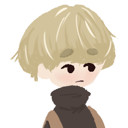
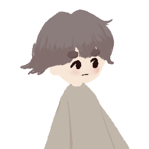
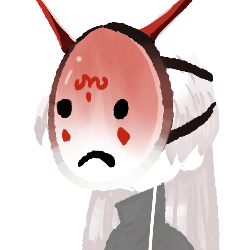
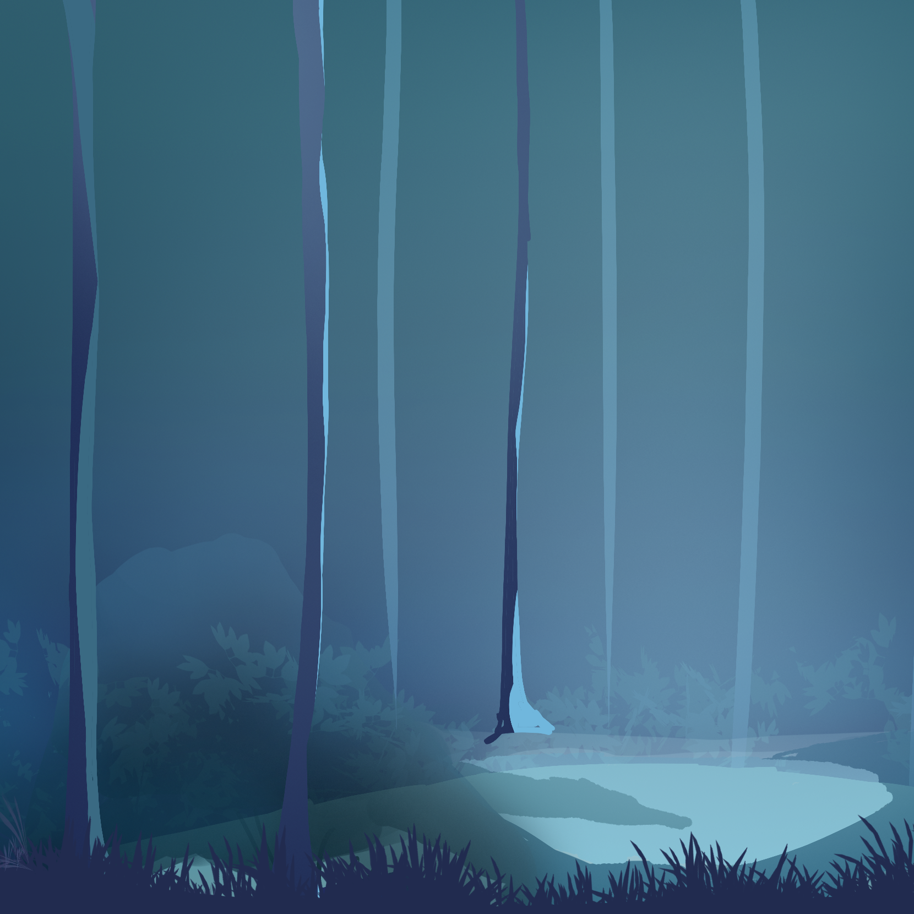

Go Back Home
Can you find your way back by solving the puzzles?
Trailer
Not available yet.
Story
A boy and his little brother are lost in the woods. They find that only unknown spirits roam around the woods. There is a gate that connects between the two worlds, and they must find their way back home. Solve puzzles and discover clues to find your way out.
To win the game you must solve all the puzzles in the game and find the map to the gate that allows you to enter back to the real world. The gate only appears after you have solved all the puzzles. Purchasing various tools, aids, and boosts/power-ups greatly speed up the time it takes to complete the game.
World
Characters

Player

Brother

Merchant
Settings

Woods
The area you enter!
 Great Market
Go buy some items!
Great Market
Go buy some items!
 River
The Gate lies here!
Ruins
Find more puzzles!
River
The Gate lies here!
Ruins
Find more puzzles!
Team
Go Back Home is an adventure game focused on exploration and strategy. The game is made by Emily Godby, Yi Jiang, and Quinn Schoenfeld, a group of students from University of Nevada, Reno.